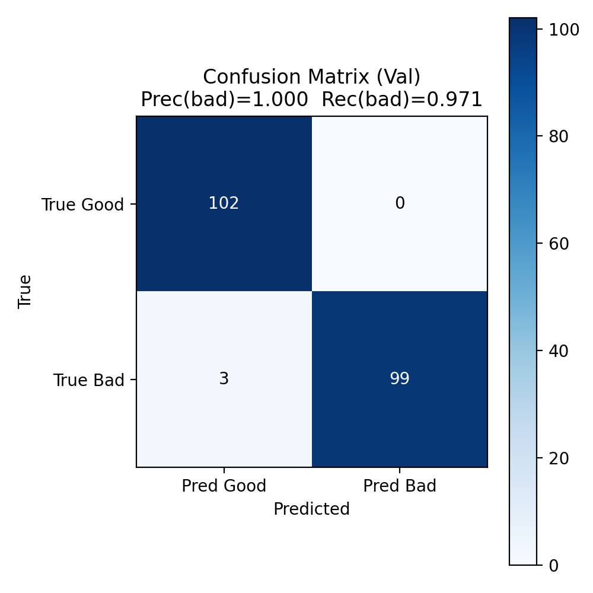

| Average IoU | 0.8106 |
|---|---|
| Average Dice | 0.8774 |
| Precision (bad) | 1.0000 |
|---|---|
| Recall (bad) | 0.9706 |
| F1 (bad) | 0.9851 |
| Accuracy | 0.9853 |
| TP | 99 |
| FP | 0 |
| FN | 3 |
| TN | 102 |
| Total Samples | 204 |
Rows: True class (Good, Bad) – Columns: Predicted class (Good, Bad)

Panels (original + GT & predicted overlays) are saved in:
outputs/scratch_UNext_multitask_subset_2/val_panels